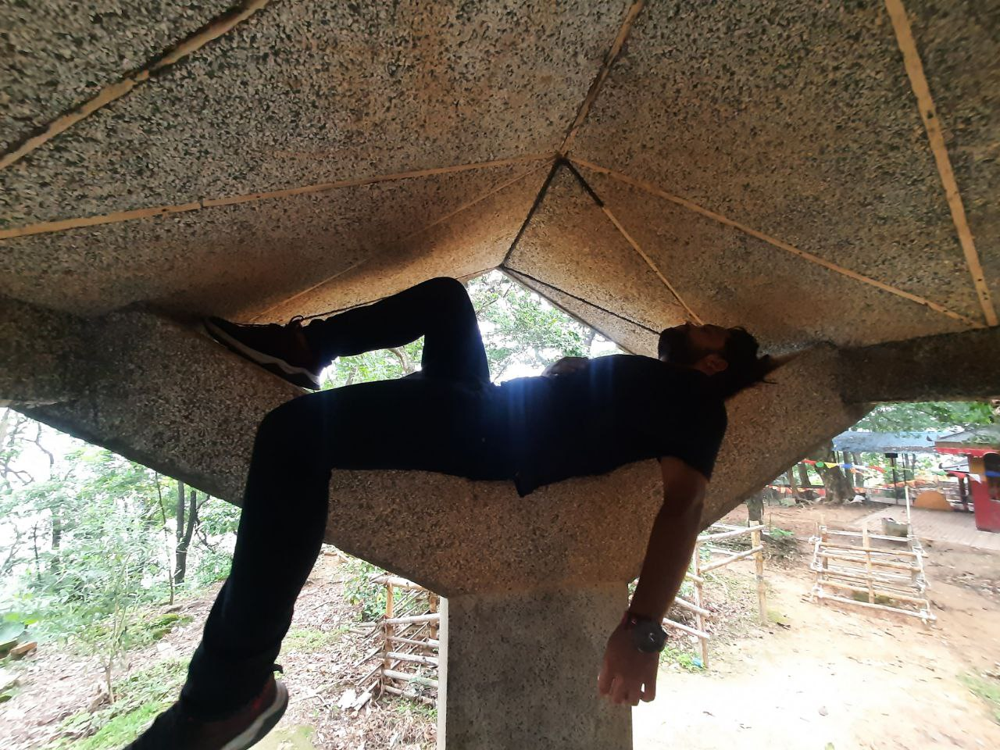
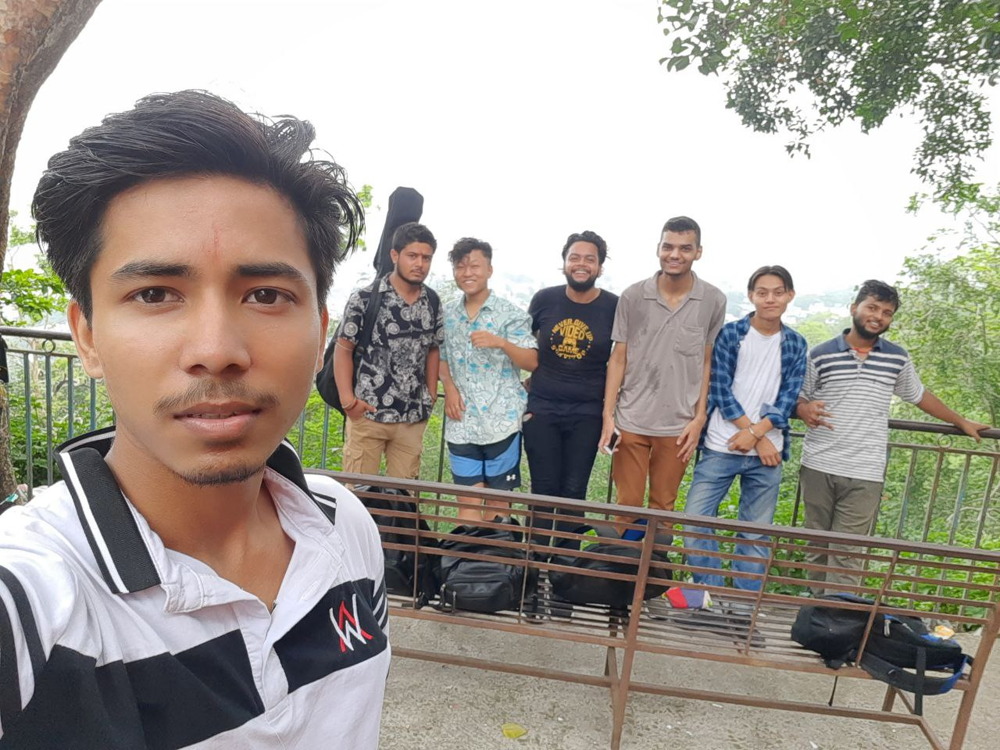
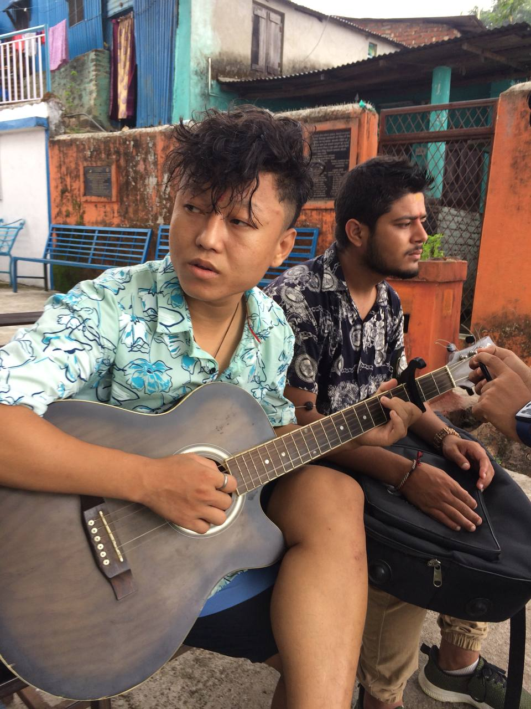
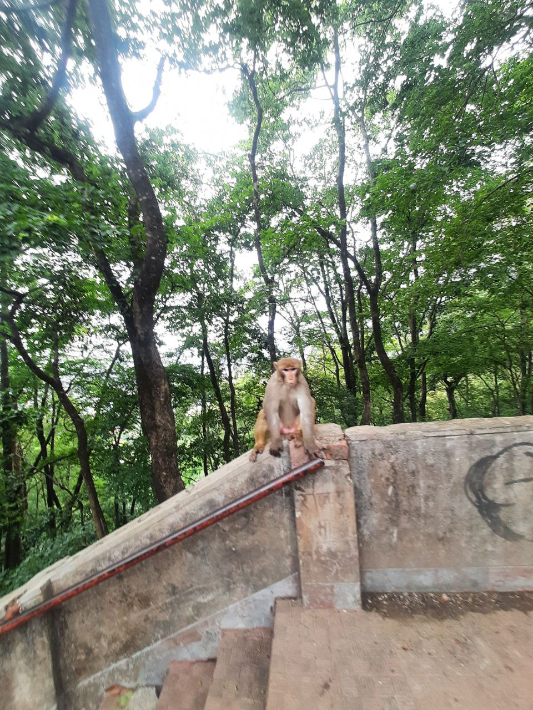
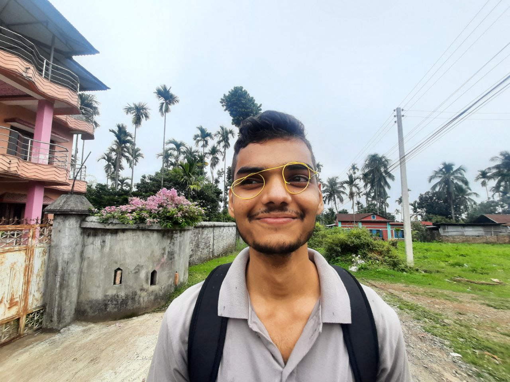
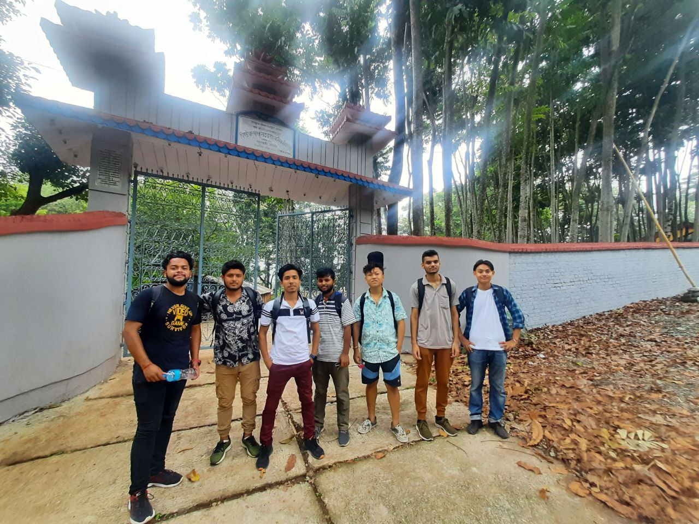

Dharan Trip
By Nischal
How it all began: It was the day our one friend got to see the beauty of God’s creation in some random girl. He was so amazed by the beautiness, he couldn’t get himself out that thought.
One of our friend was so going through very tough situation of life. He was sad, depressed and miserable. The whole class was worried because all those fun were lost. He of course, required some travelling .
The day was usual as always.We all boys were having some discussion in a break. The discussion was all about everyone’s break up and life lessons.Everyone had a different story, some were funny, some were useless and some were made up stories. After listening to all story stuffs one came up with an idea of going for one-day tour to a very different place. We all were like- Not a bad idea. A different place carries a different vibes. So it was not a planned trip but out of sadness and boredness we all agreed going somewhere far from where we were. We decided to go Dharan, to the top hills- peaceful and fresh. We planned to meet at the junction the next morning.
The very next day, we the seven boys bunked the class, we had Guitar, bag packed up with underwears and a packet of ciggeretes. We took a bus and started our trip to Dharan.
 Bibek clicking group photo after we got in a bus
Bibek clicking group photo after we got in a bus
Dharan is beautiful place cool, clean, well managed with high hills and water streams. The weather that day was supporting too. It was cloudy, cool day with low sun beams. After we reached Dharan the first thing the boys were doing was roaming everwhere around searching for ciggeretes. After walking while in the roads of Dharan , we entered route which leads us to various temples.
 Binayak clicking route photo
Binayak clicking route photo
Climbing and reaching to the temple which is in top of hills , we are exhausted. You can see, our friend Binayak Sharma resting for a while.

After worshiping and praying to the gods, we ate quick snacks . We decided to rest for few minutes and clicked some photos and jam with music. It was a fun expericence to sing at the top of hills.
 At the top of Dharan hills
 Milan singing his original song that is dedicated to his lover.
And after this , we headed to find the any available spots where we can swim. The weather was hot so we needed a clean cold water . We hadn’t had much ideas where we can find one. So , we started searching on our own.
 A random encounter with monkey while returing back from the hills
Some random photos taken on our way to find the swimming spots
 Locally made Ray-Ban

After hour of walking, we finally found a small man made bathing spot and took the bath. It was refreshing.
 Soaking up on heat after bathing
Soaking up on heat after bathing
And we ended our trip. Thanks for reading.